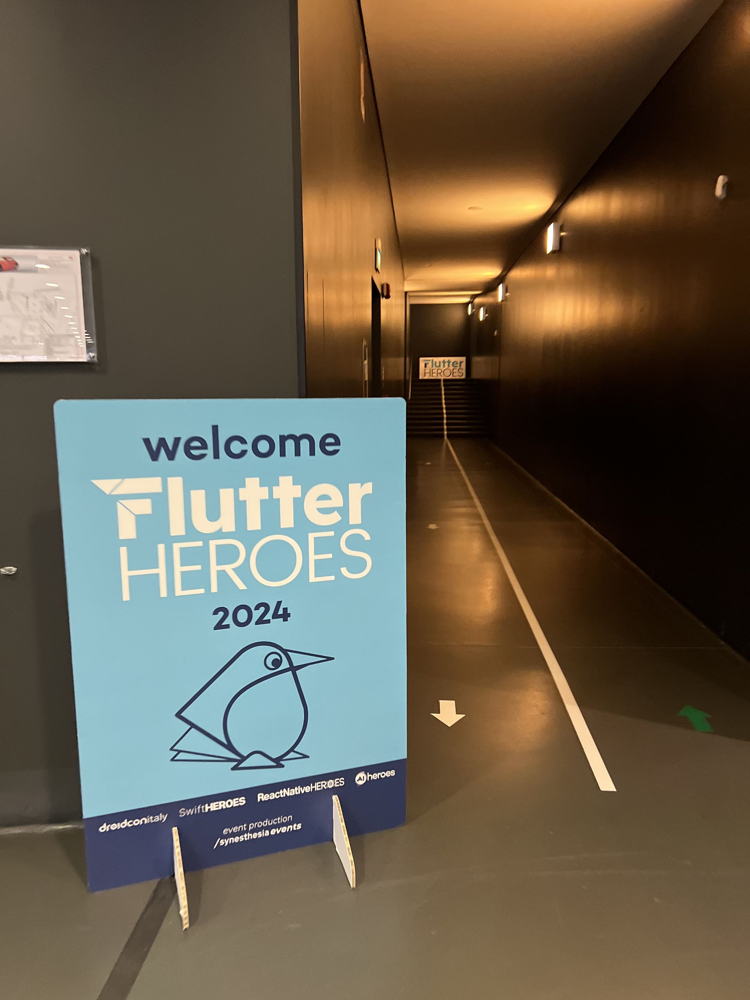
Flutter Heroes 2024, Torino
23 February 2024, Museo Nazionale dell'Automobile. One day at Flutter Heroes, the Italian conference dedicated to Flutter and Dart — third edition, in Torino and online, run by /synesthesia events — the same people who produce droidcon Italy, and who had put on React Native Heroes in this same building eight months earlier.
Out of Milano Centrale at 07.30, at the museum before nine, back on the 19.25 train home: a single day, one stage in the auditorium of a car museum, and a schedule that went from the weight an app leaves on a phone to accessibility, architecture and state management. Below is what that day looked like, with the photos and the clips I shot.
3rdedition of Flutter Heroes
10talks, one stage
2hands-on workshops
140 kmMilano to Torino, by train
- FlutterHeroes24
- Flutter
- Dart
- Bloc
- Riverpod
- GetIt
- Accessibility
- App footprint
- Torino
Three editions, and a car museum
Flutter Heroes started as the Italian stop of Google's Flutter Festival and then settled into the auditorium of the MAUTO, where it has been held ever since.
- 2022 Torino, Talent Garden The first edition, part of Google's Flutter Festival
- 2023 Torino, MAUTO Second edition, and the move to the car museum
- 2024 Torino, MAUTO Third edition, 23 February — where #FlutterHeroes24 was held
Getting there
140 km of train from Milano Centrale to Torino Porta Nuova and then the Museo Nazionale dell'Automobile on Corso Unità d'Italia — a museum of cars that for one day a year turns into a Flutter conference. The way in is a long dark corridor, with the conference's line-drawn bird on a sign at the bottom of it.
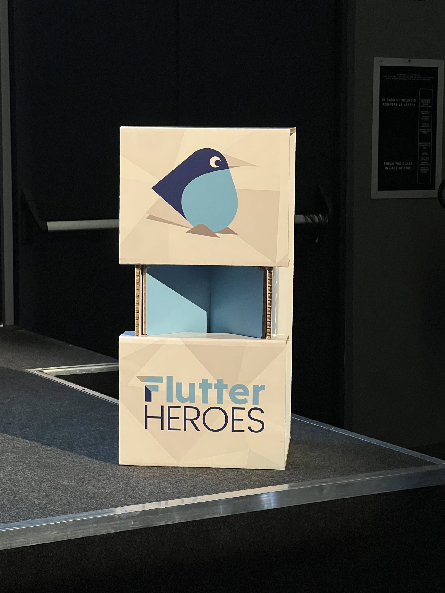
The bird, printed on cardboard
The stage, and the letters
One stage, one screen, and the wooden FlutterHEROES letters lined up along the front of it for the whole day — the photo everybody in the room took at least once. The opening came from the /synesthesia events crew in their orange shirts: 23 February 2024, Torino and online, "by /synesthesia events, the producers of droidcon Italy".
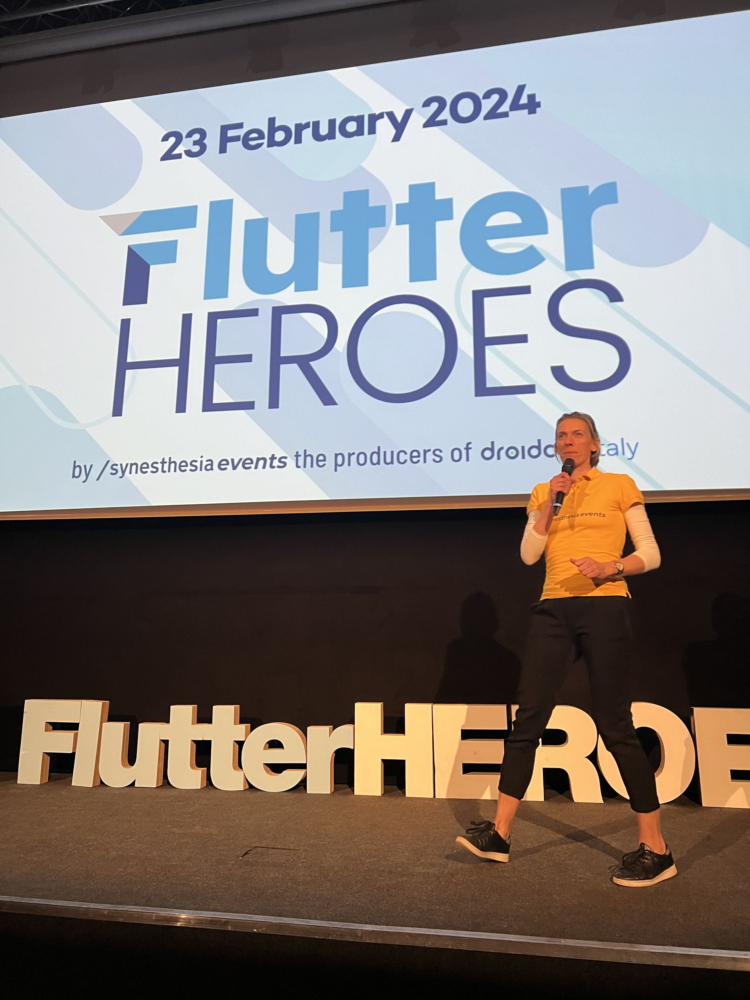
The opening, 23 February 2024
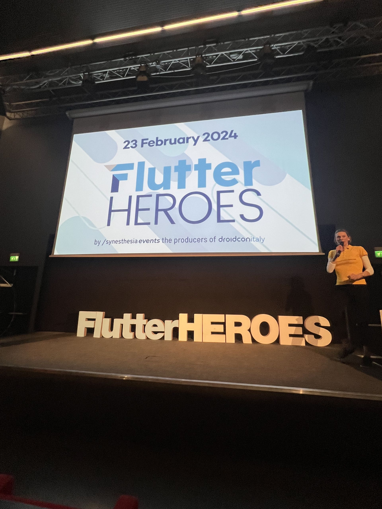
The stage, and the letters along the front of it
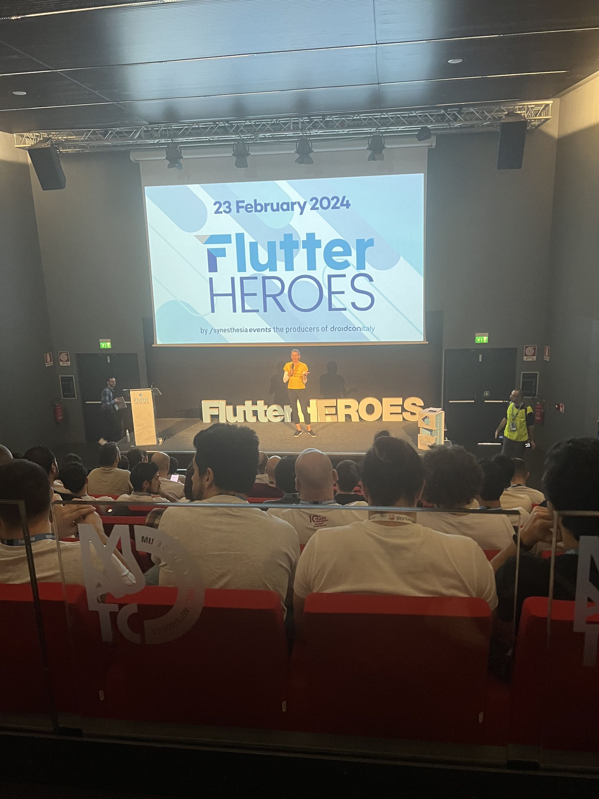
The title slide, all day between talks
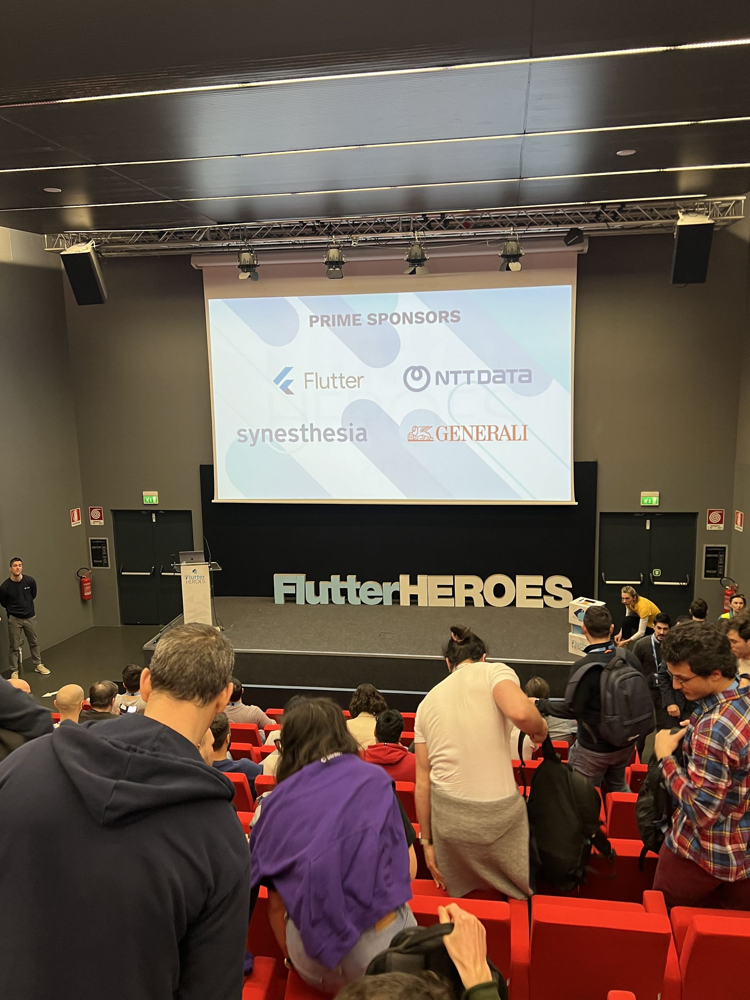
Prime sponsors: Flutter, NTT Data, synesthesia, Generali
A full auditorium
Red seats, a raked floor and the museum's own logo printed on the seat backs: the MAUTO auditorium is a cinema more than a conference hall, which makes it a very good room to watch code in. It filled up before the first talk and stayed full until the last one.
Between two talks, on the main stage
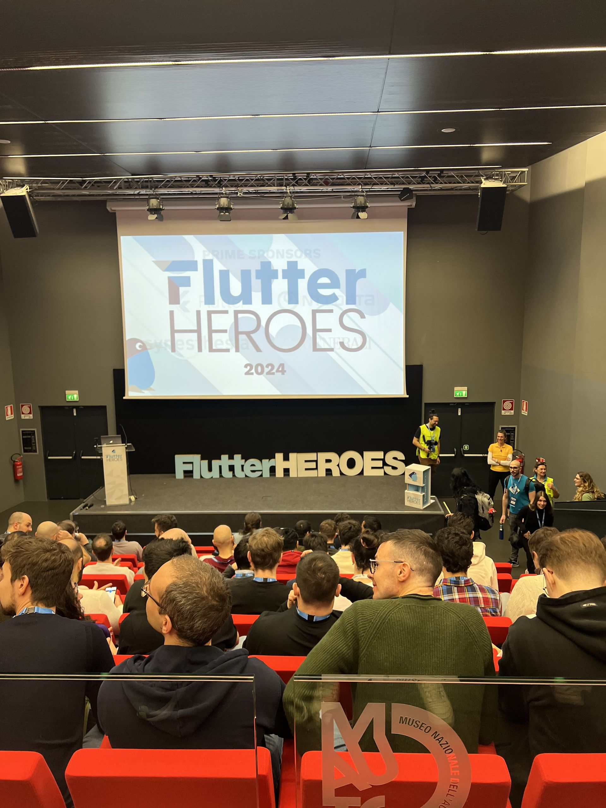
On stage, between one session and the next
Mind your app footprint
Three engineers of SNCF Connect & Tech — François Nollen, Alexandre Poichet and Alexis Choupault — took on the footprint an app leaves behind: size, network and battery, which stop being details the moment millions of people use what you ship. Smaller bundles with the Android App Bundle, tree shaking and deferred components, logic and SDKs moved off the client, and tuning for low-end devices, thin bandwidth and a nearly empty battery. Environmental impact as an engineering constraint, not a slide at the end.
"Mind your app footprint!", by the SNCF Connect & Tech team
Accessibility, from UI and UX
Another session made the case for accessibility in Flutter as a design decision before a coding one. Because Flutter draws every pixel itself, it is easy to build a single custom UI for both platforms — and just as easy to end up with components that no longer look or behave like anything the operating system offers, which is exactly where screen readers and system settings stop working properly. The advice: prefer UI and UX elements that stay close to native, and think twice before making one graphic language for Android and iOS.
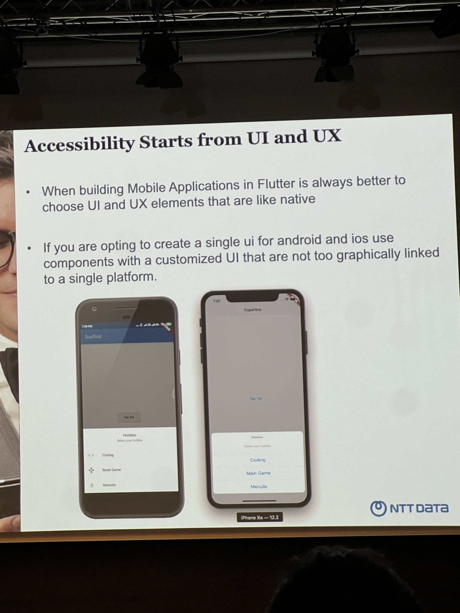
"Accessibility starts from UI and UX"
Architecture, borrowed from Android
A whole session spent taking Android's recommended app architecture — UI layer, domain layer, data layer, each component only allowed to use the one below it — and putting it to work in a Flutter codebase: repositories as plain classes, data sources behind them, DTOs mapped into domain models at the boundary, and GetIt doing the dependency injection with a @singleton annotation — the same layering an Android codebase would use, on the other framework.
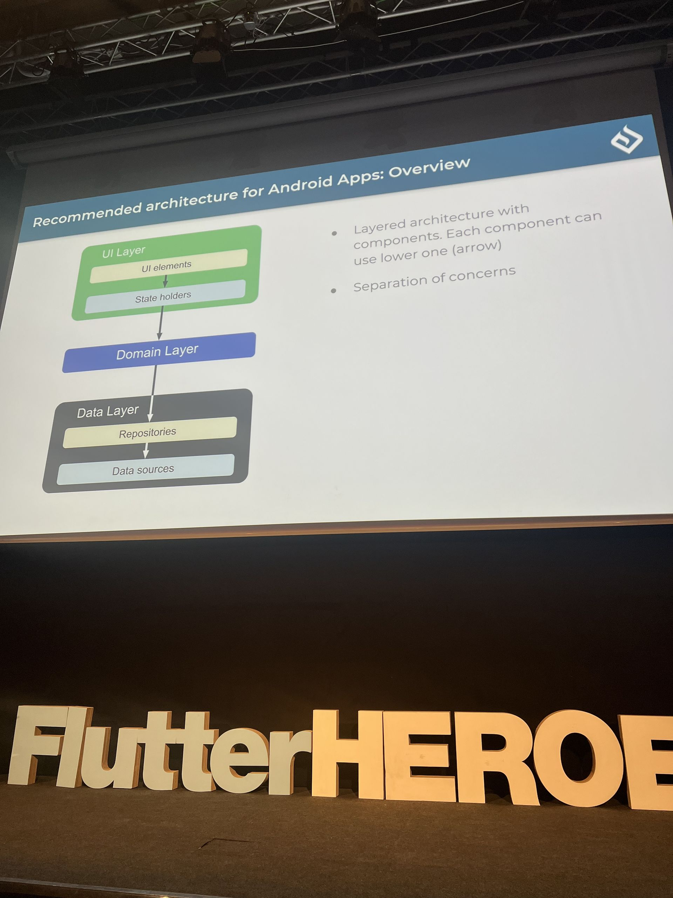
UI layer, domain layer, data layer
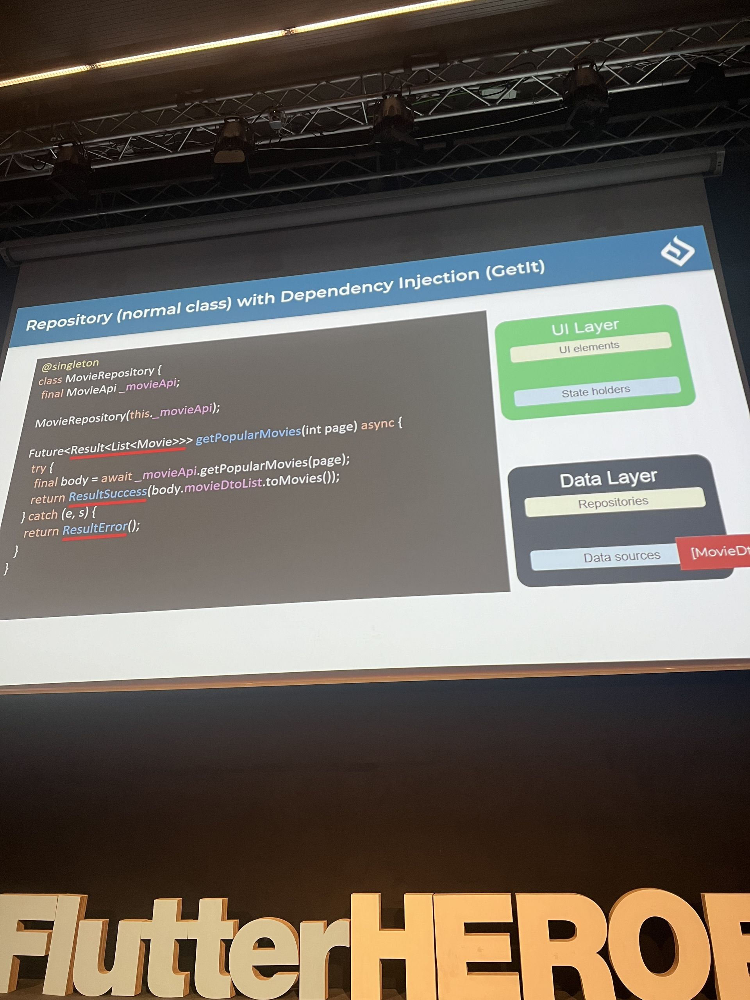
Where the DTO stops and the model starts
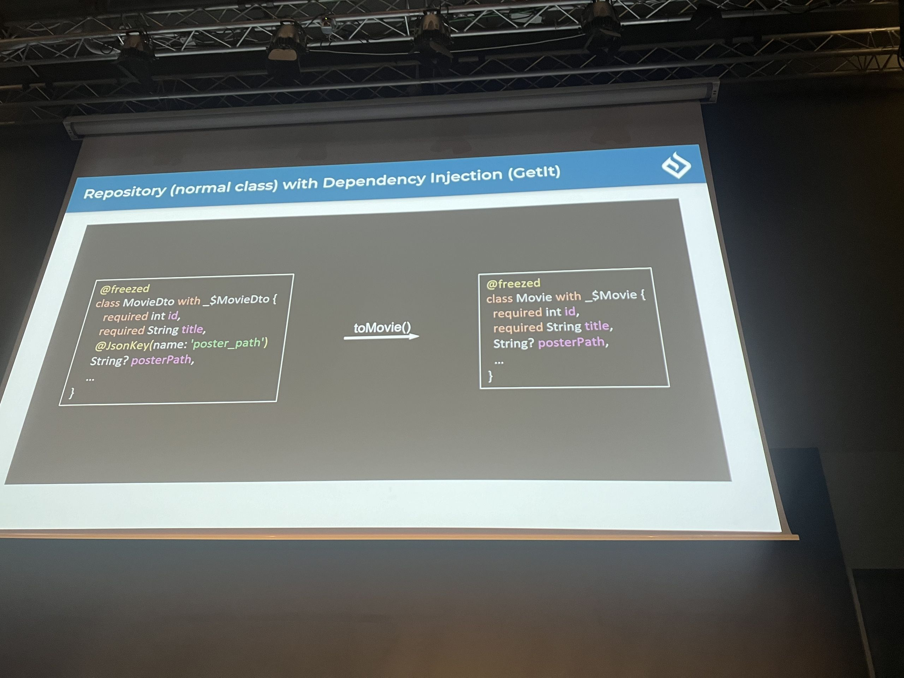
A repository as a plain class
Bloc vs Riverpod
Nicolò Sordoni took on the argument that never ends in a Flutter team: Bloc or Riverpod, differences and similarities between the two most popular state managers, and what you actually gain and lose by picking one. The rest of the schedule ran just as wide: Craig Labenz from Google on the life cycle of a RenderObject, Dart FFI, security in Flutter apps, debugging performance with the DevTools, animations versus delivery — plus two hands-on workshops in the side rooms, one on navigation and one on end-to-end testing with Patrol.
"Flutter state management: Bloc vs Riverpod"
Dash, in the swag bag
And then the reason half the room queued at the desk: a plush Dash, the Flutter and Dart mascot, with its own little Dart tag around the neck. Two of them came home with us, one per developer, and spent the rest of the afternoon being photographed in front of the screen instead of the slides.
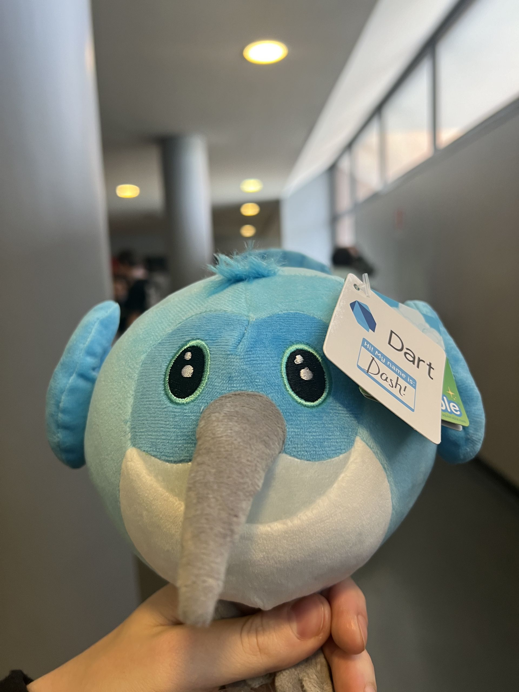
Dash, with its Dart tag on
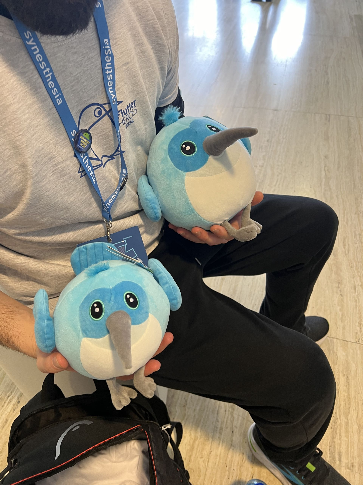
Two of them, one per developer
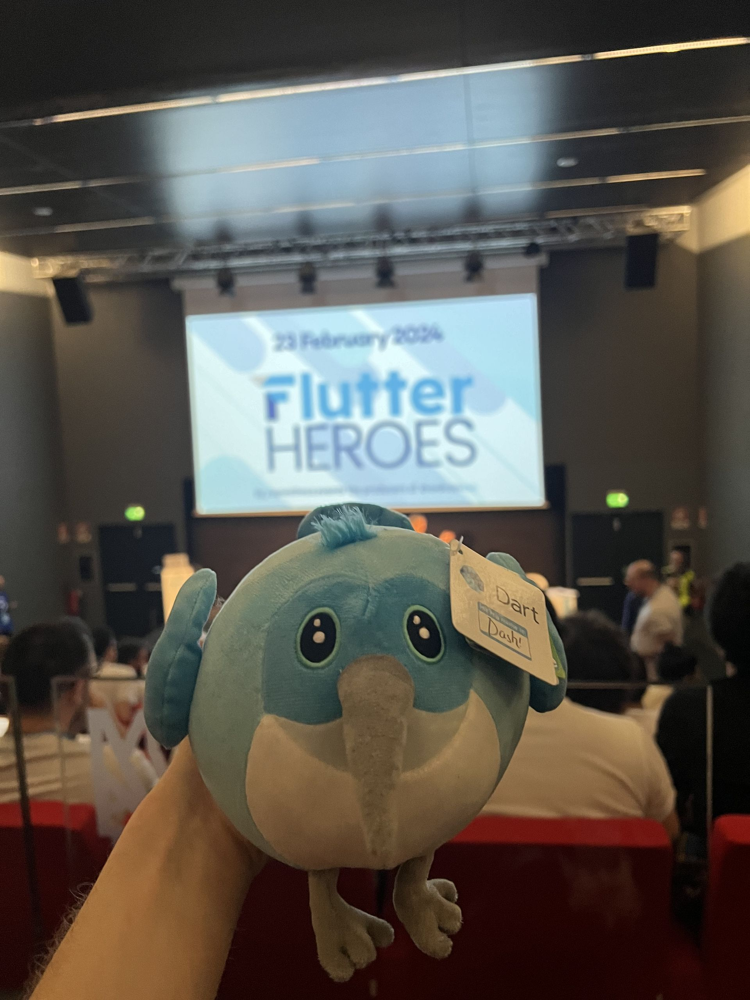
Back in the auditorium
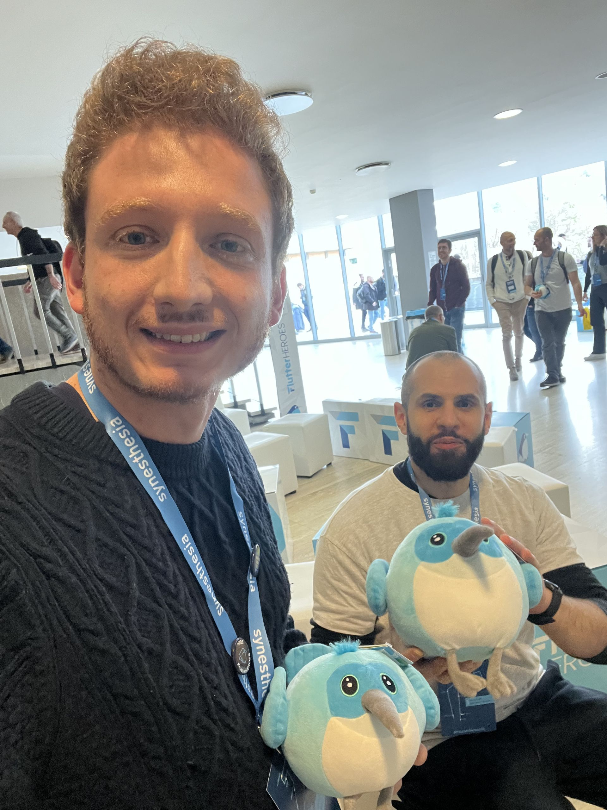
At the desk, plushes collected
Home on the 19.25
One day, ten talks, a notebook full of things to try on Monday morning and a plush bird in the backpack — the 19.25 out of Torino Porta Nuova and back in Milano by half past eight. Three days later I was in Barcelona for MWC 2024, which is a different kind of week entirely. I went back to Flutter Heroes the year after, for the 2025 edition — in a cinema, that time.
Flutter Heroes 2024, Museo Nazionale dell'Automobile, Torino, 23 February 2024.